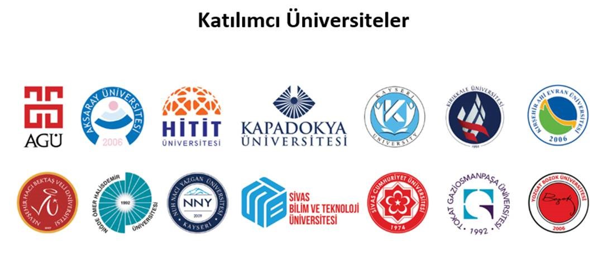

Etkinlik Hakkında
Erciyes Üniversitesi tarafından dördüncü kez düzenlenecek olan Araştırma İnovasyon Çalıştayı’nın bu yılki amacı; bölge üniversiteleri arasında iş birliğinin artırılması yoluyla; nitelikli insan kaynağı yetiştirilmesi, ortak altyapıların kullanılması, katma değeri yüksek akademik çıktı elde edilmesi ve çalıştaya katılacak üniversitelerin birbirini ve araştırma potansiyelini tanımasıdır. Çalıştay 09-10 HAZİRAN tarihlerinde ERCİYES ÜNİVERSİTESİ / SABANCI KÜLTÜR MERKEZİ gerçekleştirilecektir.
Nerede
ERCİYES ÜNİVERSİTESİ / SABANCI KÜLTÜR MERKEZİ
Zamanları
09-10 HAZİRAN 2022
Etkinlik akışı aşağıdadır
Etkİnlİk Program Akışı
1. GÜN - 09.06.2022
- 09:30 Kayıt
- 10:00 – 11:15 Açılış konuşmaları (ERÜ, TÜBİTAK MAM, TAGEM)
- 11.15 – 11.30 Ara
- 11.30 – 12.15 Yeşil Mutabakat Ekseninde Tarım ve Gıda, Prof. Dr. Nuri Azbar (Ege Üni.)
- 12.15 – 13.00 Tarımda Güneş Enerjisi, Prof. Dr. Raşit Turan (ODTÜ GÜNAM)
- 13.00 – 13.15 TÜBA ve TÜBİTAK ödülü alan ERÜ mensubu araştırmacılara plaket takdimi
- 13.15 – 14.30 Öğle Arası
- 14.30 – 17.30 TÜBİTAK 1004 Projesi Panel Öncesi Değerlendirme Toplantısı
2. GÜN - 10.06.2022
- 09.30 – 10.45 Küresel İklim Değişikliğinde Azaltım Eylemleri Çerçevesinde İş Birliği İmkânları (Oturum I)
Moderatör - Prof. Dr. Raşit Turan (ODTÜ GÜNAM)
- Dr. İncinur Hasbay (TÜBİTAK MAM)
- Doç. Dr. Mehmet Şenbayram (Harran Üni.)
- Dr. Necati Çetin (ERÜ)
- Prof. Dr. Nesrin Kayataş Demir (ERÜ)
- Dr. Öğr. Üyesi Süreyya Özcan Kabasakal (ODTÜ)
- Dr. Talat Özden (ODTÜ GÜNAM)
- 10.45 – 11.00 Ara
- 11.00 – 12.15 Küresel İklim Değişikliğinde Azaltım Eylemleri Çerçevesinde İş Birliği İmkânları (Oturum II)
Moderatör Prof. Dr. Osman Sönmez (ERÜ)
- Arzu Koca (Kayseri Şeker)
- Didem Tümük (Toros Tarım AŞ.)
- Prof. Dr. Mükerrem Betül Aycan (ERÜ)
- Prof. Dr. Lütfiye Ömür Demirezer (Hacettepe Üni.)
- Dr. Özgür Doğan (TÜBİTAK MAM)
- Prof. Dr. Semih Yılmaz (Promoseed Biyoteknoloji AŞ.- ERÜ Teknopark Firması)
- Doç. Dr. Sevcan Aydın (İstanbul Üni.)
- 12.15– 14.00 Öğle Arası
- 14.00 – 15.15 Küresel İklim Değişikliğinde Uyum Eylemleri Çerçevesinde İş Birliği İmkânları
Moderatör Doç. Dr. Özhan Şimşek (ERÜ)
- Prof. Dr. Ahu Altınkut Uncuoğlu (Marmara Üni.)
- Prof. Dr. Aydın Uzun (ERÜ)
- Doç. Dr. Emrah Koçak (ERÜ)
- Prof. Dr. Nedim Mutlu (Akdeniz Üni.)
- Dr. Taner Bozkurt (Tekfen Tarım AŞ.)
- Prof. Dr. Yıldız Aka Kaçar (Çukurova Üni.)

Organizasyon Komitesi
| Prof. Dr. Mustafa Çalış | Erciyes Üniversitesi Rektörü |
|---|---|
| ....... | ...... |
| ....... | ...... |